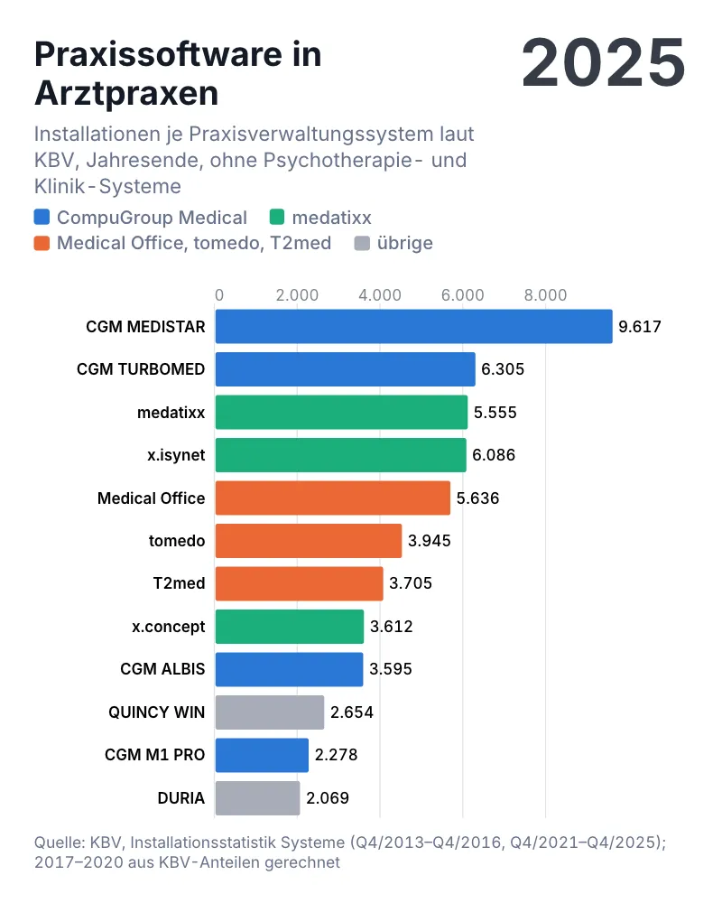
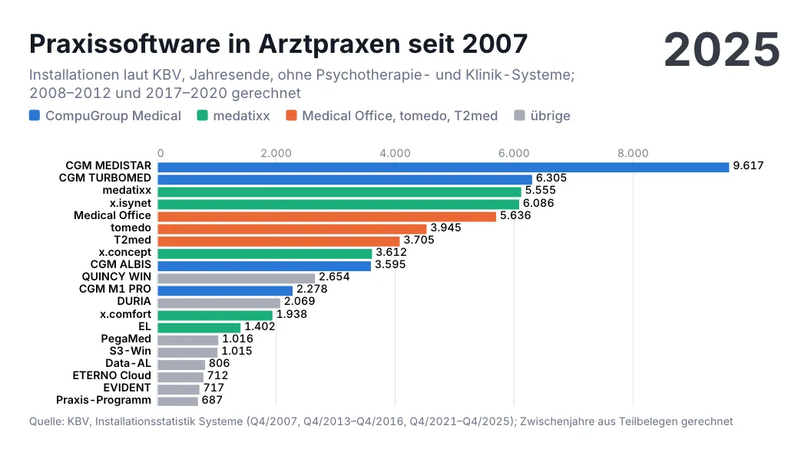
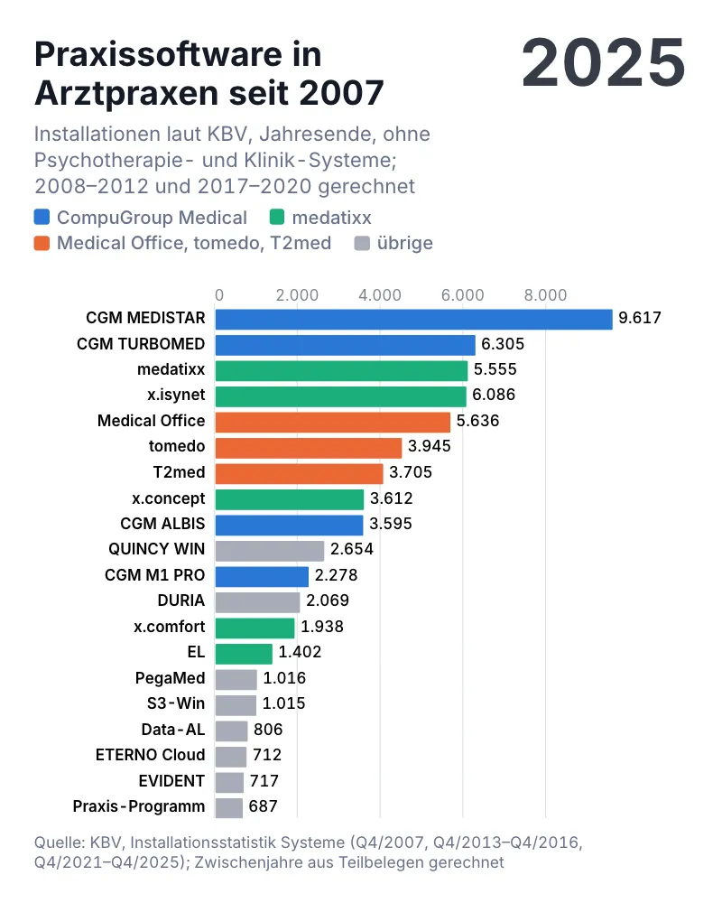

Praxissoftware in Arztpraxen: Marktanteile seit 2013
Die meistgenutzte Praxissoftware in deutschen Arztpraxen ist CGM MEDISTAR mit 9.617 Installationen Ende 2025, vor CGM TURBOMED (6.305), dem neuen medatixx (6.121) und x.isynet (6.086). Das zeigt die Installationsstatistik der Kassenärztlichen Bundesvereinigung (KBV). Der Abstand schrumpft aber seit Jahren: 2013 entfielen noch 50 Prozent der Installationen ärztlicher Systeme auf CompuGroup Medical, 2025 sind es 32 Prozent.


Das Wichtigste in Kürze
- 9.617 Installationen hat CGM MEDISTAR Ende 2025, 35 Prozent weniger als Ende 2013 (14.859). Platz 1 hält es trotzdem.
- CGM TURBOMED hat seit 2013 mehr als die Hälfte seiner Installationen verloren, von 13.161 auf 6.305.
- Medical Office wuchs von 1.115 auf 5.700, tomedo von 7 auf 4.530 und T2med von 0 (Markteintritt 2015) auf 4.078.
- Alle CGM-Arztsysteme zusammen fielen von 40.206 auf 22.070 Installationen, medatixx von 21.896 auf 19.159.
- Die ärztlichen Systeme zählen zusammen 11.913 Installationen weniger als 2013 (80.104 auf 68.191). Warum, sagt die Statistik nicht; naheliegend sind Praxisaufgaben und Zusammenschlüsse zu größeren Praxen und MVZ.
Wer führt und wer aufholt
Wer die Grafik laufen lässt, sieht zwei Bewegungen gleichzeitig. Oben halten sich die alten Namen: CGM MEDISTAR steht in jedem Jahr auf Platz 1, CGM TURBOMED bis heute auf Platz 2. Beide verlieren aber Jahr für Jahr Installationen, und mit ihnen ALBIS (minus 45 Prozent) und QUINCY WIN (minus 32 Prozent).
Von unten schieben sich drei Systeme nach vorn, die 2013 kaum eine Rolle spielten. Medical Office von INDAMED überholt ALBIS und x.concept und liegt Ende 2025 auf Platz 5. tomedo von Zollsoft, das auf dem Mac läuft, und T2med, das unter Windows, macOS und Linux läuft, starten 2013 mit 7 beziehungsweise 0 Installationen und stehen 2025 auf den Plätzen 6 und 7.
Das neue Produkt medatixx ist ein Sonderfall. Es wächst schnell, aber vor allem, weil medatixx seine eigenen Praxen von x.isynet, x.concept und x.comfort auf das neue System umzieht. Das ist eine Migration innerhalb eines Herstellers, kein Wettbewerbserfolg. Zusammengerechnet verliert medatixx seit 2013 ein Achtel seiner Installationen, obwohl 2022 mit EL ein weiteres System dazukam; CGM verliert fast die Hälfte.
Die lange Fassung: seit 2007


2007 ist das erste Jahr, für das die KBV-Liste aller Systeme erhalten ist. In der langen Fassung mit 20 Zeilen sieht man, wie lange sich die Spitze gehalten hat: CGM MEDISTAR steht in jedem Jahr auf Platz 1, CGM TURBOMED auf Platz 2, x.isynet bis 2024 auf Platz 3. Darunter verschwinden Systeme ganz, etwa PDE-TOP (2007 noch 987 Installationen, ab 2013 nicht mehr in der Liste) und easymed (2007 noch 2.095, ab 2023 nicht mehr), und ab 2013 kommen die neuen von null. Für 2008 bis 2012 gibt es nur Teilbelege; diese Jahre sind dazwischen gerechnet, mehr dazu unten unter „Gerechnet“.
Davor: 1997, 2000 und 2005
Für die Zeit vor 2007 ist keine lückenlose Reihe möglich: Für 2001 bis 2004 und 2006 ist keine Liste je System erhalten. Drei belegte Momentaufnahmen zeigen trotzdem, woher der Markt kommt, jeweils die zehn größten Systeme für ärztliche Praxen:
| Rang | Ende 1997 | Mitte 2000 | Ende 2005 | Ende 2007 |
|---|---|---|---|---|
| 1 | MEDISTAR 9.875 | MEDISTAR 11.229¹ | MEDISTAR 14.741 | MEDISTAR 14.838 |
| 2 | TURBOMED 6.724 | TURBOMED 8.832¹ | TURBOMED 11.273 | TURBOMED 12.747 |
| 3 | MCS-INA 6.031 | MCS-INA 5.673 | MCS-ISYNET 8.523 | x.isynet 8.760 |
| 4 | DOC EXPERT 5.532 | DOC EXPERT 4.165 | DOCexpert 7.485 | ALBIS 7.470 |
| 5 | QUINCY PCNET 3.476 | QUINCY PCNET 3.413 | ALBIS 6.989 | x.comfort 6.976 |
| 6 | DAVID 2.915 | ALBIS 3.235¹ | CompuMED M1 4.273 | x.concept 5.275 |
| 7 | ARCOS 2.738 | DAVID 2.884 | QUINCY WIN 3.774 | CGM M1 PRO 4.798 |
| 8 | ALBIS 2.356¹ | ARCOS 2.399 | DOCconcept 3.502 | QUINCY WIN 4.268 |
| 9 | LEISYS 2.000 | LEISYS 2.244 | DAVID 2.319 | easymed 2.095 |
| 10 | DORSYMED 1.974 | DOCexpert Comfort 1.945 | easymed 2.290 | DAVID 2.091 |
| Alle Installationen | 69.252 | 77.501 | nicht veröffentlicht | 114.244 |
¹ Summe der DOS- und der Windows-Version, die die KBV in diesen Jahren in getrennten Zeilen führte (gerechnet). Mitte 2000 ist das Abrechnungsquartal 2/2000. Die Werte für 2005 stammen aus einer Dissertation an der Medizinischen Hochschule Hannover (Kersting), die die KBV-Statistik zitiert; der Stichtag Ende 2005 ist naheliegend, aber nicht ausdrücklich belegt.
Drei Dinge fallen auf. MEDISTAR ist in jeder belegten Liste seit 1997 das größte System, 2000 allerdings nur mit DOS- und Windows-Version zusammen. Fünf der zehn Namen von 1997 gibt es nicht mehr: MCS-INA, DOC EXPERT, ARCOS, LEISYS und DORSYMED; ihre Praxen sind zum Teil auf Nachfolgeprodukte derselben Hersteller umgezogen, die heute zu medatixx und CompuGroup Medical gehören. Und die Gesamtzahl wächst von 69.252 auf 114.244 Installationen, vor allem weil immer mehr Praxen digital abrechneten und seit 1999 die Psychotherapeuten hinzukamen. Ein Vergleich der Werte von 1997 mit heute misst deshalb vor allem die Digitalisierung, nicht den Wettbewerb.
Was die Zahl nicht sagt
- Installationen sind keine Praxen und keine Ärzte. Die KBV zählt Abrechnungen mit der Prüfnummer eines Systems. Ein MVZ mit 20 Ärztinnen und Ärzten zählt wie eine Einzelpraxis. Die KBV schreibt selbst, die Statistik sei kein genaues Abbild des tatsächlichen Marktes. Was Prüfnummer, KVDT und Installationsstatistik genau bedeuten, steht in den Begriffen der Praxis-IT.
- Psychotherapie ist herausgenommen. In der Gesamtliste führt Elefant, eine Software für psychotherapeutische Praxen, mit 10.967 Installationen. Diese Grafik zeigt nur Systeme für ärztliche Praxen; die Psychotherapie bekommt einen eigenen Beitrag.
- 2017 bis 2020 sind gerechnet. In diesen Jahren hat die KBV nur Anteile in Prozent veröffentlicht, ohne Installationszahlen. Die Werte sind aus diesen Anteilen und einer gerechneten Gesamtzahl entstanden, für Systeme ohne veröffentlichten Anteil linear zwischen 2016 und 2021.
- Je Fachgruppe sieht die Spitze anders aus. Unter allen Arztsystemen führt CGM MEDISTAR, in der KBV-Arztgruppe Allgemeinmediziner Ende 2025 aber medatixx (1.892 Installationen), bei Augenärzten FIDUS. Alle Fachgruppen stehen in der Übersicht nach Fachgruppen.
- Keine Aussage über Qualität. Wie zufrieden Praxen mit ihrem System sind, misst die KBV-Statistik nicht.
Gerechnet
113 von 364 Werten der Grafik sind gerechnet, alle in den Jahren 2017 bis 2020 (bis auf ETERNO Cloud 2013, wo der erste Beleg von 2014 gehalten ist). In der langen Fassung ab 2007 kommen die Jahre 2008 bis 2012 dazu: Dort sind die Jahresenden linear zwischen Teilbelegen gerechnet (Mitte 2009 die 20 größten Systeme, Ende 2010 die fünf größten, Mitte 2011 die sieben größten, Ende 2011 die Werte je Anbieter; bei acht Anbietern mit nur einem System ist der Anbieterwert als Systemwert übernommen). Von den jeweils 20 sichtbaren Balken sind dort 176 von 380 gerechnet oder angenommen, 46 Prozent. Methode je Wert: Datei pvs-gerechnet.json in den Rohdaten, Herleitung in der Datenherkunft. Medical Office springt dabei laut KBV-Anteil von 1.832 Installationen Ende 2016 auf rund 3.000 im Herbst 2017; ob der Sprung echt ist, ist offen, denn für 2021 hat die KBV Medical Office nachweislich doppelt gezählt und später korrigiert.
Quelle und Methode
Kassenärztliche Bundesvereinigung, Installationsstatistiken der Praxisverwaltungssysteme, Jahresenden 2013 bis 2016 und 2021 bis 2025, ältere Berichte über das Webarchiv; Anteile für Q3/2017 und Q3/2020 aus den Berichten derselben Reihe. Abgerufen am 20. Oktober 2026. Aufgenommen ist jedes ärztliche System, das seit 2013 mindestens einmal 500 Installationen hatte, 28 Systeme. Hersteller nach dem Eigentümer Ende 2025.
Alle Systeme mit Zahlen für Ende 2025, die Psychotherapie- und Krankenhaussysteme und die Schnittstellen-Zulassungen je System stehen in der Übersicht Praxisverwaltungssysteme in Deutschland.
Häufige Fragen
Welche Praxissoftware hat den größten Marktanteil?
Unter den Systemen für Arztpraxen CGM MEDISTAR mit 9.617 Installationen Ende 2025, 14,1 Prozent der ärztlichen Systeme in der KBV-Statistik. Nach Herstellern führt CompuGroup Medical mit 22.070 Installationen in fünf Systemen.
Welche Praxissoftware wächst am stärksten?
Seit 2013 Medical Office (von 1.115 auf 5.700), tomedo (von 7 auf 4.530) und T2med (von 0 auf 4.078). Das Produkt medatixx wächst ebenfalls stark, aber überwiegend durch Umstiege von anderen medatixx-Systemen.
Woher stammen die Zahlen?
Aus der Installationsstatistik der KBV, die zählt, mit welchem System die Praxen ihre Kassenabrechnung erstellen. Sie erscheint quartalsweise mit etwa einem Jahr Verzug; die Zahlen für Ende 2025 hat die KBV im Oktober 2026 veröffentlicht.